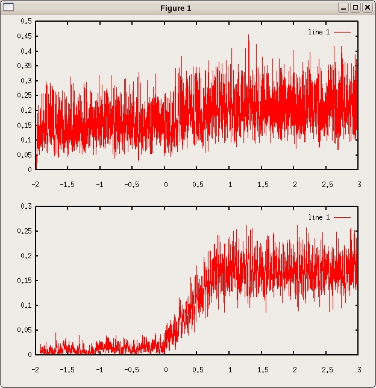

This is the readme file for the model associated with: Okamoto H, Isomura Y, Takada M, Fukai T (2007) Temporal integration by stochastic recurrent network dynamics with bimodal neurons. J Neurophysiol 97:3859-67 Usage: Compile the ansi C program with, for example under linux: gcc -o run.exe Okamoto_etal_program.c -lm then type ./run.exe and enter a numerical seed for the random number generator. The program finishes in less than a minute and produces two data files whose graphs should look like: 